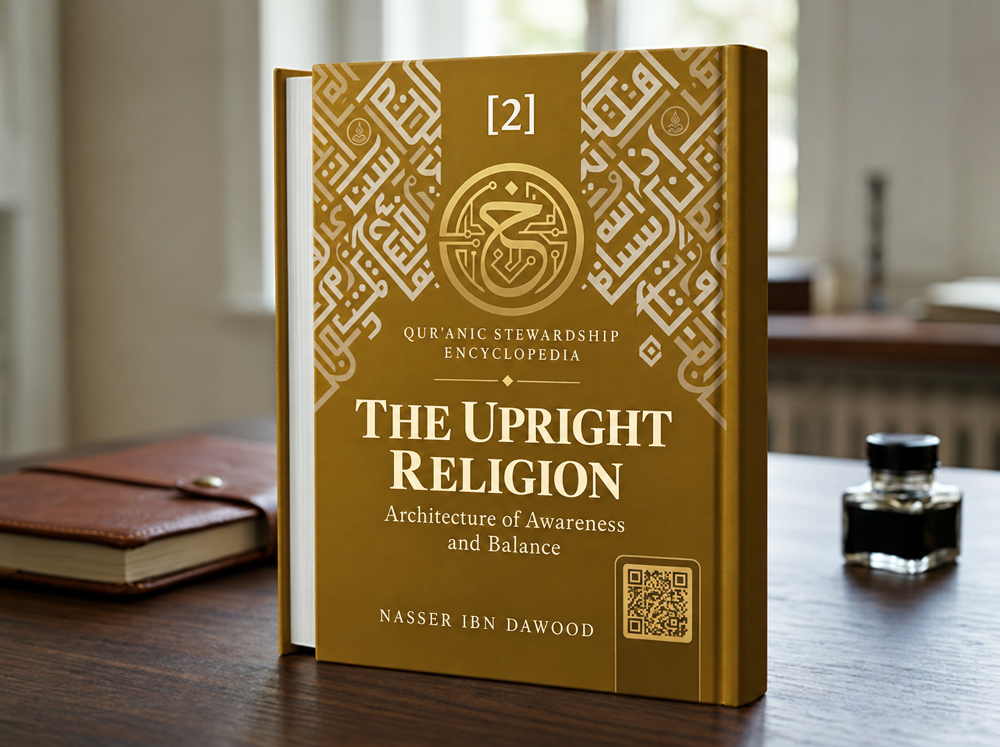

Nasser Ibn Dawood

Text extracted from the author-supplied Word edition; consult the original source.
Preparing the reader…
The Upright and Sustaining Religion: The Architecture of Awareness and Balance
A Condensed Conceptual Adaptation of Volume Two
Nasser Ibn Dawood
I. The Global Knowledge Manifesto
Knowledge is a universal right: The author firmly believes that wisdom should not be locked behind paywalls or language barriers.
Global Access Policy: All books in this library are available for free in multiple digital formats (PDF, DOCX, TXT).
The Digital Library: As of early 2026, the collection hosts 68 volumes (34 in Arabic and 34 in English), fully optimized for AI-assisted research and digital archiving.
Official Platforms: Main Website: https://nasserhabitat.github.io/nasser-books-v2/
GitHub: nasserhabitat/nasser-books
II. Translator’s Note: The Bridge of Meaning
This English edition is a condensed conceptual adaptation. It is not a word-for-word translation, but rather an “extraction of essence.” It presents the core philosophical framework in accessible English, omitting the exhaustive linguistic debates and classical references found in the original Arabic text.
For the academic researcher: The original Arabic version remains the primary source for comprehensive linguistic analysis, detailed exegesis (Tafsir), and the complete bibliography.
The Upright and Sustaining Religion: The Architecture of Awareness and Balance
A Condensed Conceptual Adaptation of Volume Two
This adaptation summarizes the conceptual argument for readers who do not read Arabic. It does not replace the Arabic original or claim to reproduce every linguistic argument, citation, or interpretive detail.
The problem of distorted understanding
This volume begins with a question: how can a person or community receive guidance yet lose the meanings that should govern understanding and action? The author argues that religious language has often been narrowed to identity, ritual, or inherited formulas. To address this, the book studies concepts through their roots, contexts, and relations, while distinguishing the Qur’anic text from interpretive conclusions and proposed models.
Religion and the sustaining balance
The author reads “religion” as a broad ordering of human life under governing principles, and “upright/sustaining” as a quality associated with maintaining balance and preventing structural collapse. The compound expression “the upright religion” is therefore developed as a conceptual framework for a way of life that can preserve orientation across changing circumstances. This is the author’s linguistic and systems-based thesis; it should be read as an argument to assess, not as a universally settled definition.
Guidance, names, and human perception
The book presents language as formative: names and concepts shape what people notice, how they classify experience, and which choices seem possible. In its reading of the Adam narrative, the teaching of the names becomes a foundation for human knowledge and responsibility. The author’s model connects naming, perception, judgment, and action. It is a proposed explanatory framework, not a direct Qur’anic statement about a modern theory of cognition.
Trial as a test of interpretation
The account of the first human trial is read as a study of how desire, suggestion, and alternative framing can disrupt judgment. The tree is considered by its function in the narrative rather than by speculation about its botanical identity. The discussion of Iblis and waswasa is explicitly analytical: the author uses ideas such as cognitive interference to describe a possible mechanism of misdirection, without presenting that terminology as a revealed definition. The movement to earthly life is treated as entry into responsibility and action; repentance becomes a path of correction and renewed direction.
Collective distortion and the Samaritan pattern
The book then examines the story of the Children of Israel and the calf as a case study in the instability of meaning. It asks how a community can exchange truth for a visible symbol, and how an influential interpreter can claim privileged insight and redirect collective attention. The “Samaritan” is also used functionally to describe a recurring pattern of reframing, including in contemporary institutions and digital environments. This analogy is the author’s proposed application of the narrative; it should not be confused with the Qur’anic account itself.
Witness, reform, and protection of meaning
The volume explores differentiated roles in social repair: warning, structural change, protection of meaning, public witnessing, and practical embodiment. It considers the absence of people or institutions that preserve conceptual clarity as a vulnerability. Its proposed response is not to wait passively for rescue, but to cultivate ethical scholarship, responsible reform, and institutions that can test claims and correct misuse of authority.
Hanifiyya as continuous correction
Hanifiyya is presented as dynamic reorientation rather than a static identity. The book’s model describes a recurring effort to return from distortion, resist the elevation of tools into ultimate ends, and prevent symbolic or bureaucratic systems from displacing their proper purposes. The proposed sequence runs from sound naming to clearer perception, considered choice, conduct, and finally social construction. This sequence is a conceptual map offered by the author, not a formula explicitly stated in the Qur’an.
A method for the reader
The reader is invited to test each proposal against the full textual context, relevant counterexamples, and a reverse test: would the proposed rule still hold when applied to a contrasting passage or case? The book’s central warning is that errors in naming can become errors in perception and institutions. Its central hope is that careful reading, balance, and ongoing correction can help communities preserve meaning without claiming interpretive infallibility.